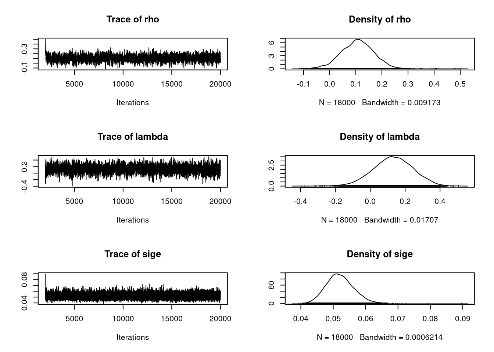

library(spdep)
lw <- nb2listw(unb, style="W")
library(spatialreg)
e <- eigenw(lw)9 Estimation of spatial autoregressive models: methods (ML, Bayesian, GMM)
Spatial autoregressive models used in spatial econometrics may be estimated in a number of ways. We have already used maximum likelihood estimation, so will start there, moving on to Bayesian estimation, and completing with the generalised method of moments (GMM) estimation. Much of this section is based on Bivand and Piras (2015).
9.1 Maximum likelihood estimation
(from Bivand, Millo, and Piras (2021))
The log-likelihood function for the spatial error model (SEM) is:
\ell(\beta, \rho_{\mathrm{Err}}, \sigma^2) = - \frac{N}{2} \ln 2 \pi - \frac{N}{2} \ln \sigma^2 + \ln |{\mathbf I} - \rho_{\mathrm{Err}} {\mathbf W}| - \frac{1}{2 \sigma^2} \big[({\mathbf y} - {\mathbf X}\beta)^\top ({\mathbf I} - \rho_{\mathrm{Err}} {\mathbf W})^\top({\mathbf I} - \rho_{\mathrm{Err}} {\mathbf W}) ({\mathbf y} - {\mathbf X}\beta)\big].
\beta may be concentrated out of the sum of squared errors term, for example as:
\ell(\rho_{\mathrm{Err}}, \sigma^2) = - \frac{N}{2} \ln 2 \pi - \frac{N}{2} \ln \sigma^2 + \ln |{\mathbf I} - \rho_{\mathrm{Err}} {\mathbf W}| - \frac{1}{2 \sigma^2} \big[{\mathbf y}^\top({\mathbf I} - \rho_{\mathrm{Err}} {\mathbf W})^\top ({\mathbf I} - {\mathbf Q}_{\rho_{\mathrm{Err}}}{\mathbf Q}_{\rho_{\mathrm{Err}}}^\top) ({\mathbf I} - \rho_{\mathrm{Err}} {\mathbf W}){\mathbf y}\big]
where {\mathbf Q}_{\rho_{\mathrm{Err}}} is obtained by decomposing ({\mathbf X} - \rho_{\mathrm{Err}} {\mathbf W}{\mathbf X}) = {\mathbf Q}_{\rho_{\mathrm{Err}}}{\mathbf R}_{\rho_{\mathrm{Err}}}.
The first published versions of the eigenvalue method for finding the Jacobian (Ord 1975, 121) is:
\ln(|{\mathbf I} - \lambda {\mathbf W}|) = \sum_{i=1}^{N} \ln(1 - \lambda\zeta_i)
where \zeta_i are the eigenvalues of {\mathbf W}.
One specific problem addressed by Ord (1975, 125) is that of the eigenvalues of the asymmetric row-standardised matrix {\mathbf W} with underlying symmetric neighbour relations c_{ij} = c_{ji}. If we write {\mathbf w} = {\mathbf C}{\mathbf 1}, where {\mathbf 1} is a vector of ones, we can get: {\mathbf W} = {\mathbf C}{\mathbf D}, where {\mathbf D} = {\mathrm {diag}}(1/{\mathbf w}); by similarity, the eigenvalues of {\mathbf W} are equal to those of: {\mathbf D}^{\frac{1}{2}}{\mathbf C}{\mathbf D}^\frac{1}{2}. From the very beginning in spdep, sparse Cholesky alternatives were available for cases in which finding the eigenvalues of a large weights matrix would be impracticable, see (Bivand, Hauke, and Kossowski 2013) for further details.
SEM_pre_maj <- errorsarlm(form_pre_maj, data=eng324, listw=lw, control=list(pre_eig=e), quiet=FALSE)
Spatial autoregressive error model
Jacobian calculated using neighbourhood matrix eigenvalues
lambda: -0.3748541 function: -4.941735 Jacobian: -4.52514 SSE: 19.01899
lambda: 0.1502935 function: 19.30871 Jacobian: -0.788878 SSE: 16.75685
lambda: 0.4748525 function: 16.56229 Jacobian: -8.876868 SSE: 16.21334
lambda: 0.246777 function: 20.19845 Jacobian: -2.188131 SSE: 16.52175
lambda: 0.2580037 function: 20.21679 Jacobian: -2.400493 SSE: 16.49824
lambda: 0.2639805 function: 20.21899 Jacobian: -2.517964 SSE: 16.48606
lambda: 0.2634933 function: 20.21901 Jacobian: -2.508273 SSE: 16.48704
lambda: 0.2634766 function: 20.21901 Jacobian: -2.507941 SSE: 16.48707
lambda: 0.2634769 function: 20.21901 Jacobian: -2.507947 SSE: 16.48707
lambda: 0.2613861 function: 20.21868 Jacobian: -2.466594 SSE: 16.49131
lambda: 0.2626781 function: 20.21896 Jacobian: -2.492103 SSE: 16.48869
lambda: 0.2631716 function: 20.219 Jacobian: -2.501885 SSE: 16.48769
lambda: 0.2633601 function: 20.21901 Jacobian: -2.505626 SSE: 16.48731
lambda: 0.2634321 function: 20.21901 Jacobian: -2.507056 SSE: 16.48716
lambda: 0.2634596 function: 20.21901 Jacobian: -2.507603 SSE: 16.48711
lambda: 0.2634701 function: 20.21901 Jacobian: -2.507812 SSE: 16.48709
lambda: 0.2634743 function: 20.21901 Jacobian: -2.507896 SSE: 16.48708
lambda: 0.2634758 function: 20.21901 Jacobian: -2.507924 SSE: 16.48708
lambda: 0.2634762 function: 20.21901 Jacobian: -2.507934 SSE: 16.48707
lambda: 0.2634766 function: 20.21901 Jacobian: -2.50794 SSE: 16.48707
lambda: 0.2634767 function: 20.21901 Jacobian: -2.507943 SSE: 16.48707
lambda: 0.2634766 function: 20.21901 Jacobian: -2.507941 SSE: 16.48707
lambda: 0.2634766 function: 20.21901 Jacobian: -2.507941 SSE: 16.48707
lambda: 0.2634766 function: 20.21901 Jacobian: -2.507941 SSE: 16.48707 The values used in calculating the likelihood function can be tracked as line search moves towards the optimum, where for many of the final iterations, the value of the spatial coefficient, here reported as lambda, moves little.
The log-likelihood function for the spatial lag model is:
\ell(\beta, \rho_{\mathrm{Lag}}, \sigma^2) = - \frac{N}{2} \ln 2 \pi - \frac{N}{2} \ln \sigma^2 + \ln |{\mathbf I} - \rho_{\mathrm{Lag}} {\mathbf W}| - \frac{1}{2 \sigma^2} \big[(({\mathbf I} - \rho_{\mathrm{Lag}} {\mathbf W}){\mathbf y} - {\mathbf X}\beta)^\top(({\mathbf I} - \rho_{\mathrm{Lag}} {\mathbf W}){\mathbf y} - {\mathbf X}\beta)\big]
and by extension the same framework is used for the spatial Durbin model when [{\mathbf X} ({\mathbf W}{\mathbf X})] are grouped together. The sum-of-squared errors (SSE) term in the square brackets is found using auxilliary regressions {\mathbf e} = {\mathbf y}-({\mathbf X}^\top{\mathbf X}){\mathbf X}{\mathbf y} and {\mathbf u} = {\mathbf W}{\mathbf y}-({\mathbf X}^\top{\mathbf X}){\mathbf X}{\mathbf W}{\mathbf y}, and SSE = {\mathbf e}^\top{\mathbf e} - 2 \rho_{\mathrm{Lag}} {\mathbf u}^\top{\mathbf e} + \rho_{\mathrm{Lag}}^2 {\mathbf u}^\top{\mathbf u}. The cross-products of {\mathbf u} and {\mathbf e} can conveniently be calculated before line search begins; Bivand (2012) gives more details.
Models with two parameters require that \rho_{\mathrm{Lag}} and \rho_{\mathrm{Err}} be found by constrained numerical optimization in two dimensions by searching for the maximum on the surface of the log likelihood function, which is like that of the spatial error model with additional terms in {\mathbf I} - \rho_{\mathrm{Lag}} {\mathbf W}:
\ell(\rho_{\mathrm{Lag}}, \rho_{\mathrm{Err}}, \sigma^2) = - \frac{N}{2} \ln 2 \pi - \frac{N}{2} \ln \sigma^2 + \ln |{\mathbf I} - \rho_{\mathrm{Lag}} {\mathbf W}| + \ln |{\mathbf I} - \rho_{\mathrm{Err}} {\mathbf W}| - \frac{1}{2 \sigma^2} \big[{\mathbf y}^\top({\mathbf I} - \rho_{\mathrm{Lag}} {\mathbf W})^\top({\mathbf I} - \rho_{\mathrm{Err}} {\mathbf W})^\top({\mathbf I} - {\mathbf Q}_{\rho_{\mathrm{Err}}}{\mathbf Q}_{\rho_{\mathrm{Err}}}^\top) ({\mathbf I} - \rho_{\mathrm{Err}} {\mathbf W})({\mathbf I} - \rho_{\mathrm{Lag}} {\mathbf W}){\mathbf y}\big]
where {\mathbf Q}_{\rho_{\mathrm{Err}}} is obtained by decomposing ({\mathbf X} - \rho_{\mathrm{Err}} {\mathbf W}{\mathbf X}) = {\mathbf Q}_{\rho_{\mathrm{Err}}} {\mathbf R}_{\rho_{\mathrm{Err}}}.
The nlminb optimiser is currently used by default, but as the figure shows, it jumps around quite a lot on the flat ridge of the surface of the log-likelihood, here displayed after additional calculation over a 40 by 40 grid. Note that this work has been computed on a x86_64/amd64 processor, which uses 80-bit extended precision. We are already seeing cases of arm64 processors with 64-bit precision affecting optimisation outcomes, (Apple Silicon, expected elsewhere). Much AI/GPU technology uses reduced precision, unfortunately.
SAC_pre_maj <- sacsarlm(form_pre_maj, data=eng324, listw=lw, control=list(pre_eig1=e, pre_eig2=e), llprof=40)
SAC_track <- capture.output(sac <- sacsarlm(form_pre_maj, data=eng324, listw=lw, control=list(pre_eig1=e, pre_eig2=e), quiet=FALSE))
c(SAC_pre_maj$rho, SAC_pre_maj$lambda) rho lambda
0.1073891 0.1344878 c(SAC_pre_maj$rho/SAC_pre_maj$rho.se, SAC_pre_maj$lambda/SAC_pre_maj$lambda.se) rho lambda
1.950402 1.398422 The estimated spatial parameters, and their z-values show that the null hypothesis of no difference from zero may well be acceptable for both, with \rho_{\mathrm{Lag}} more likely to be in play than \rho_{\mathrm{Err}}; this matches the observation that the LM test for residual spatial autocorrelation from the SLM model did not reject the null hypothesis of no residual spatial autocorrelation. Here \rho_{\mathrm{Err}} and \rho_{\mathrm{Lag}} are competing for any remaining spatial signal in the data.
m <- -matrix(SAC_pre_maj$llprof$ll, 40, 40)
con <- textConnection(SAC_track)
sac_track <- read.table(con, skip=14)
close(con)
contour(SAC_pre_maj$llprof$xseq, SAC_pre_maj$llprof$yseq, m, levels=quantile(c(m), seq(0,1,0.1)), xlab="rho", ylab="lambda", col="blue4")
abline(h=SAC_pre_maj$rho, v=SAC_pre_maj$lambda, lwd=3, col="grey")
lines(sac_track$V2, sac_track$V4, col="brown3")9.2 Bayesian estimation
There is no time now to go into depth about Bayesian estimation, for now it is sufficient to know that instead of fitting models using maximum likelihood by optimising the log-likelihood function, the likelihood function and the underlying distributional assumptions are sampled from in this case in a Markov chain Monte Carlo framework.
set.seed(12345)
SAC_bayes <- spBreg_sac(form_pre_maj, data=eng324, listw=lw, control=list(ndraw=20000L, nomit=2000L))Here we are fitting a SAC model with 20,000 samples drawn, and report the outcomes for \rho_{\mathrm{Lag}}, \rho_{\mathrm{Err}} and \sigma^2 (for ML, \sigma^2 was 0.05087):
summary(SAC_bayes[, c("rho", "lambda", "sige")])
Iterations = 2001:20000
Thinning interval = 1
Number of chains = 1
Sample size per chain = 18000
1. Empirical mean and standard deviation for each variable,
plus standard error of the mean:
Mean SD Naive SE Time-series SE
rho 0.10663 0.062091 4.628e-04 1.639e-03
lambda 0.13046 0.114612 8.543e-04 2.934e-03
sige 0.05209 0.004221 3.146e-05 3.425e-05
2. Quantiles for each variable:
2.5% 25% 50% 75% 97.5%
rho -0.01906 0.06517 0.10733 0.14747 0.22475
lambda -0.09906 0.05552 0.13124 0.20869 0.34742
sige 0.04446 0.04919 0.05186 0.05476 0.06093The MCMC estimation methods in spatialreg report in mcmc objects defined in coda, and tests for convergence provided in that package can also be used. The figure shows that sampling for the spatial coefficients is somewhat uneven, which is perhaps unsurprising since they carry little information:
opar <- par(mfrow=c(2, 1))
plot(SAC_bayes[, c("rho", "lambda", "sige")], smooth=TRUE)
par(opar)9.3 Generalised method of moments estimation
There are implementations of some GMM estimation methods in spatialreg, but those in sphet are actively maintained and better adapted to recent research results (Piras 2010). The workhorse spreg model fitting function can be used with several different models, including "sarar" also known as SAC:
library(sphet)
Attaching package: 'sphet'The following object is masked from 'package:spatialreg':
impactsSAC_gmm <- spreg(form_pre_maj, data=eng324, listw=lw, model="sarar")
c(coef(SAC_gmm)[c("lambda", "rho"),], s2=as.numeric(SAC_gmm$s2)) lambda rho s2
0.18324659 0.05111413 0.05259217 Note that here lambda is \rho_{\mathrm{Lag}}, and rho is \rho_{\mathrm{Err}}, reversing the meaning of the terms elsewhere. Once again the nlminb optimiser is used, as in a number of steps \rho_{\mathrm{Lag}} is estimated by spatial two-stage least squares using {\mathbf W}{\mathbf X} and {\mathbf W}{\mathbf W}{\mathbf X} as instruments, and then optimising \rho_{\mathrm{Err}} and \sigma^2 in the method of moments steps. GMM does not use the log determinant of the Jacobian term in the model specification, and this was one of the reasons for the development of such methods.
More details on GMM estimation may be found in Bivand, Millo, and Piras (2021) and articles cited therein, and Kelejian and Piras (2017).